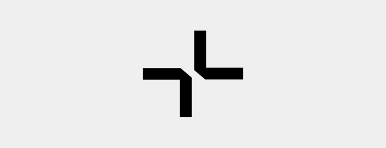

Wordmark
Логотип объединяет в себе начертания как моно шрифта, так и гротеска, что подчеркивает взаимосвязь дизайна и разработки в одном месте
Допустим только такой вариант использования. Менять шрифт / добавлять жирность / убирать знак НЕЛЬЗЯ
Пример использования полной версии логотипа на белом фоне
Пример использования полной версии логотипа в среде
Logomark
Краткая версия логотипа используется в айдентике как альтернатива полной версии. Работает как самостоятельный знак. Применяется, если не хватает пространства для полной версии или из эстетических соображений
Коллаж из фотографий. Пример использования на дверной бирке и на карандашах
Color
Белый или черный, в зависимости от цвета, на котором находится логотип. Находиться может на поверности любого цвета. При столкновении с градиентом, к логотипу (полной и краткой) форме применяются правила изменения цвета
Rotate
Вращать НЕЛЬЗЯ. ВООБЩЕ. НИКАК